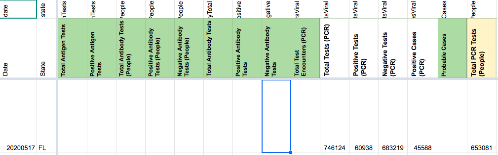
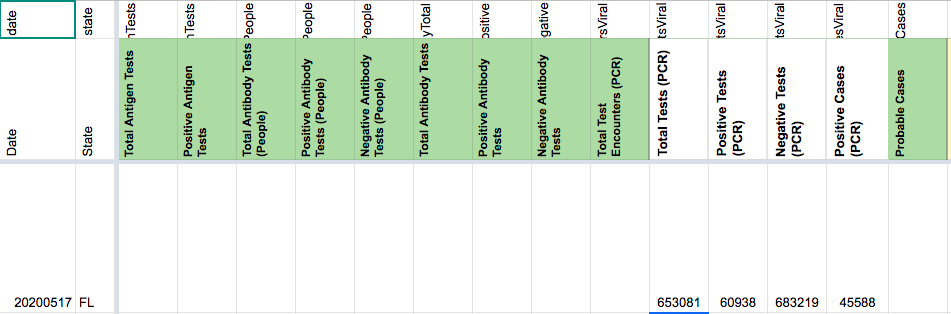

[FL] Incorrect Testing Value, 5/17; Total Tests PCR (People) before 5/13; missing Total Tests (PCR) before 5/17
Issue number 749
jesseandersonumd opened this issue on August 11, 2020 at 10:02 am
Labels Data quality Historical Data stale
State: FL
ISSUE ONE - resolved Date impacted: 5/17 Issue: We incorrectly reported Total Tests (PCR) on 5/17 as 653081 when it should be 746124. Source: http://ww11.doh.state.fl.us/comm/_partners/covid19_report_archive/state_reports_20200517.pdf
ISSUE TWO Date impacted: Before 5/13 Issue: missing Total Tests PCR (People) before 5/13 Source: http://ww11.doh.state.fl.us/comm/_partners/covid19_report_archive/state_reports_20200517.pdf
ISSUE THREE Date impacted: 5/17 Issue: missing Total Tests (PCR) before 5/17 Source: http://ww11.doh.state.fl.us/comm/_partners/covid19_report_archive/state_reports_20200517.pdf
Comments
AFTER:

Double-checked. Everything looks good.
This issue has been automatically marked as stale because it has not had recent activity. It will be closed if no further activity occurs. Thank you for your contributions!
This issue has been closed because it was stale for 15 days, and there was no further activity on it for 10 days. You can feel free to re-open it if the issue is important, and label it as “not stale.”
BEFORE: 